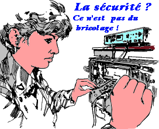
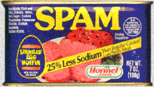

La connexion à l'Internet de nos laboratoires, si elle leur donne un formidable moyen de communication, a pour contre-partie une aggravation des risques d'intrusion informatique, de détérioration ou de vol des données et des logiciels.
Sans tomber dans une paranoïa sécuritaire et chercher à s'enfermer inutilement dans une tour soi-disant inattaquable, le laxisme n'est plus de mise en la matière, et l'accroissement régulier des intrusions ou des piratages informatiques doit nous inciter à la prudence.
Trop de chercheurs considèrent encore que la sécurité informatique n'est pas leur problème car ils n'ont pas de données sensibles et ils ne sont donc pas "exposés". Or on constate qu'un nombre important d'atteintes à la sécurité informatique relève d'actions de délinquance simple, de jeu malsain de hackers qui veulent simplement montrer qu'ils peuvent s'introduire dans un système distant. Même sous cette forme, les dégâts peuvent être importants : systèmes endommagés, données effacées ou corrompues, et la remise en ordre des machines est toujours une opération longue et coûteuse.
Les atteintes à la protection du travail scientifique, de l'indiscrétion à l'espionnage industriel, ne sont pas de la science-fiction, et des tentatives ­ parfois fructueuses ­ sont régulièrement constatées.
De nombreuses tactiques d'attaque informatique reposent sur la technique dite du cheval de Troie : sur une machine facile à forcer, le pirate introduit des modules qui lui permettront aisément de rebondir vers d'autres sites en masquant autant que possible la trace de son passage. La responsabilité du site qui, involontairement, a servi de relais à l'action délictueuse se trouve engagée.
Si nous voulons préserver l'outil de communication qu'est le réseau, nous ne pouvons plus rester négligent en la matière : un effort collectif s'impose.
Les campagnes de sensibilisation à la sécurité et les recommandations techniques diffusées pour se protéger des intrusions par le réseau ont permis des avancées substantielles dans la protection de nos laboratoires. Il semble qu'aujourd'hui il soit nécessaire d'aller plus loin, de renforcer les dispositifs de protection, voire d'imposer des méthodes ou des outils parfois plus contraignants.
Le problème doit être traité comme la sécurité routière : devant les risques connus de chacun, une stratégie organisée doit permettre de mettre en place des dispositifs appropriés en proportion des risques réels encourus. Cette stratégie commence par une analyse du risque à laquelle chacun doit se livrer avant de décider la mise en oeuvre d'outils ou de contraintes de nature à limiter ces risques.
Simultanément, notre réflexion doit s'approfondir sur nos choix en matière de diffusion de l'information par le réseau. Rien de plus facile aujourd'hui que de publier ou de diffuser le résultat des travaux scientifiques via l'Internet ou simplement de partager des études en cours entre collègues via le réseau. Sommes-nous toujours certains de l'usage qui en sera volontairement ou involontairement fait ? Connaissons-nous nos droits et nos devoirs légaux en la matière, mesurons-nous correctement les risques ?
Ce sont à ces réflexions que nous vous invitons
dans ce numéro spécial, ce sont à ces démarches
que le CNRS souhaite vous associer.
Christian Michau
Directeur de l'Unité REseaux du Cnrs
(UREC)
|  |
et de leur sécurité en particulier... |
Le réseau est partout, élément structurant de la recherche, il peut aussi être source de dangers, voire de catastrophe, faute d'avoir anticipé les problèmes et pris certaines mesures conservatoires de base assez tôt. Il n'y a pas de recette miracle, et il y aura toujours des problèmes de sécurité sur un réseau. Mais il est possible de les maîtriser par une juste appréciation de la situation : évaluer correctement les risques, les hiérarchiser par niveau et leur opposer les mesures appropriées en fonction des moyens dont on dispose et des coûts qu'induisent l'absence ou l'insuffisance de sécurité.
Le but d'un réseau est de permettre la communication, il ne faut donc pas mettre la sécurité comme l'objectif premier. Mais les récents événements sont alarmants et doivent conduire chacun à prendre très au sérieux la sécurisation des accès au réseau des laboratoires.
Cela n'arrive pas qu'aux autres ...
Cet été, un très grand nombre d'intrusions provenant de l'Internet ont été détectées dans des laboratoires CNRS et chaque semaine amène une ou plusieurs nouvelles "affaires". Il y a peu de chances que ce phénomène soit saisonnier, l'Internet est maintenant totalement ouvert et nos laboratoires sont des cibles idéales pour les délinquants joueurs, psychopathes ou intéressés par les recherches. En effet, certains incidents amènent à penser que les buts sont divers et ne sont pas toujours aussi ludiques que l'on peut le croire. Dans tous les cas cela se concrétise toujours par plusieurs jours, voire semaines de travail supplémentaires pour l'administrateur informatique ou réseau, beaucoup de gènes pour les chercheurs et globalement les utilisateurs, et une perte de confiance dans l'outil de travail informatique ; un sentiment d'insécurité qui peut être dangereux. Quelques extraits de rapports d'incidents sont instructifs :
A Grenoble, " La machine compromise est enlevée ce jour du réseau et remplacée par un PC sous Linux sans compte utilisateur,
Que peut-on faire pour éviter cette hémorragie ?
Une tendance pessimiste serait de ne rien faire car la tâche est trop importante pour les moyens humains et financiers des laboratoires. Cette attitude ne tient pas devant la recrudescence de ces attaques et l'importance du réseau et de l'informatique dans la recherche. D'expérience les laboratoires qui avaient pris des mesures de sécurité avant les attaques n'ont pas évité complètement les intrusions mais ont rapidement détecté celles-ci, pris les mesures de protection et réparé les dégâts sans affolement et sans rupture de service pour leurs utilisateurs.
D'abord les dérives ...
Mais avant de développer un peu les moyens techniques de protection, il est nécessaire d'insister sur la " bonne utilisation " du réseau par le personnel des laboratoires. Il faut contrôler trois dérives d'utilisation de l'Internet en prenant conscience que le réseau est maintenant un instrument de travail comme le téléphone et un outil de circulation d'informations comme le papier avec ses règles d'utilisation dans l'organisme et plus globalement dans la société.
C'est une ressource coûteuse, qui ne doit être utilisée qu'à des fins professionnelles. Ainsi, il est anormal de constater qu'une partie non négligeable de la bande passante des liaisons internationales de RENATER, liaisons qui sont surchargées, est utilisée pour accéder à des serveurs ludiques ou pornographiques. Nous n'avons pas encore de chiffres précis et certains ont eu tendance à noircir le tableau mais des abus ont été relevés et ont été déjà signalés à des laboratoires. Des mesures techniques draconiennes sont envisagées pour contrôler finement ces accès, mais avant d'introduire de tels mécanismes coûteux et difficiles à mettre en oeuvre il est nécessaire de faire passer ce message de bonne utilisation auprès des utilisateurs en misant sur leur civisme et le partage d'un outil de travail commun.
Le second aspect est le respect de la législation sur la presse qui s'applique à l'information électronique. Le comité de coordination des serveurs Web du CNRS [1] a défini un ensemble de recommandations [2] pour l'installation de serveurs Web dans un laboratoire CNRS, indiquant en particulier que le contenu doit être contrôlé par le Directeur de laboratoire.
Le troisième point à surveiller, qui a aussi donné lieu à des recommandations [3] est la maîtrise des listes de diffusion électroniques qui peuvent servir de moteur de distribution non contrôlé de propos illicites ou d'informations commerciales agressives qui commencent à inonder nos boîtes à lettres électroniques, les maintenant fameux SPAM [4].
Ensuite l'organisation ...
Le second volet à ne pas négliger est l'organisation, la sensibilisation des utilisateurs, la bonne administration des comptes utilisateurs et le contrôle des connexions au réseau. De nombreuses mesures peuvent être prises pour améliorer cet ensemble, cinq sont obligatoires.
1°) La désignation d'une personne en charge de la sécurité est incontournable. Elle coordonnera les différentes mesures à mettre en place, sera le chef d'orchestre en cas d'intrusion lorsque tout le monde s'affole et assurera la liaison avec les personnes en charge de la sécurité informatique au CNRS.
2°) La signature d'une charte de bon usage [5] par tous est un premier pas pour sensibiliser et responsabiliser ses utilisateurs qui peuvent devenir des dangers de manière délibérée ou involontairement par leur laxisme.
3°) On ne le dira jamais assez, le mot de passe est actuellement l'unique clé pour accéder à nos systèmes. Il doit être solide pour résister à des attaques par dictionnaire. Il faut ainsi sensibiliser ses utilisateurs à son bon choix [6] et contrôler les mots de passe avec des outils tels que crack (cf outils).
4°) Les comptes sur les machines doivent être correctement gérés. Il est nécessaire d'avoir une procédure pour enregistrer les nouveaux arrivants et une autre pour supprimer les comptes des personnes qui quittent le laboratoire.
5°) L'administrateur du réseau doit être le seul à autoriser la connexion de stations sur le réseau local, il pourra ainsi contrôler l'état des stations et identifier la personne responsable de cette station.
Ces recommandations ne sont pas théoriques mais découlent de l'expérience d'affaires de sécurité dans nos laboratoires où certains utilisateurs ont attaqués d'autres sites " pour essayer ", où un pirate a récupéré le fichier des mots de passe et ainsi découvert les mots de passe " triviaux ", où des comptes " dormant " d'une personne partie du laboratoire depuis plusieurs années ont été utilisés pour stocker des images et rebondir sur d'autres machines, où des machines sans mot de passe d'administrateur étaient connectées sur le réseau sans que le responsable du réseau le sache.
Abordons maintenant les techniques de sécurisation d'un réseau.
Y a-t-il un art pour construire des réseaux sécurisés ? Tout ce qui suit est détaillé dans un cours en ligne [7].
Les vulnérabilités sur un réseau sont multiples. Dans ce domaine, chacun cherche le zéro défaut et pense à son besoin particulier ou à un incident récent et demande à la technique de résoudre le point spécifique qu'il a présent à l'esprit. Cela peut conduire à demander la confidentialité de tous les échanges entre toutes les machines, l'authentification forte de tous les utilisateurs, la vérification du contenu de tous les messages électroniques, Les techniques existent pour mettre en place toutes ces mesures de sécurité. Mais elles ne sont pas généralisables à tous les laboratoires du CNRS, pour de multiples raisons, la première étant que la plupart conduiraient à construire un réseau fermé où l'on ne pourrait communiquer qu'entre laboratoires du CNRS. Or la demande de communication est plutôt tournée vers l'extérieur.
Il y a évidemment des besoins pointus auxquels il faut répondre comme la sécurisation des applications de gestion entre les délégations régionales, qui nécessitent des solutions spécifiques. Ce n'est pas le propos de cet article. En regardant les problèmes de sécurité de ces derniers mois, la préoccupation des laboratoires doit d'abord être la protection contre les attaques venant de l'Internet. Que peut-on faire dans ce domaine qui est déjà très vaste ?
Idéalement, si tous les postes de travail étaient correctement administrés, il n'y aurait pas besoin de sécurité au niveau du réseau ou très peu. Mais là aussi, soyons réaliste, ce n'est pas le cas et l'évolution ne va pas dans ce sens. Cela était possible avec une informatique centralisée, ce n'est pas tenable avec la multiplication des stations de travail et les risques s'amplifient plutôt avec la facilité d'installation d'un système Unix sur un PC personnel. Il faut donc agir au niveau du réseau, élément que l'on peut plus facilement maîtriser, sans toutefois mettre tous les oeufs dans le même panier, donc en pensant aussi à la sécurisation des stations. Dans ce domaine comme dans d'autres il faut se garder des politiques trop tranchées et binaires.
Comment cela se passe ailleurs ?
Le CNRS est-il un cas particulier ? La solution utilisée par une entreprise qui se connecte à l'Internet est d'installer entre le réseau interne, Intranet diraient certains, et l'Internet, un poste de garde appelé garde-barrière. Cela se matérialise par une station de travail dédiée avec un logiciel spécifique, souvent associée à un routeur. Toutes les communications entre l'extérieur et l'intérieur passent par ce point où l'on peut interdire l'accès à certaines stations, filtrer certaines applications, contrôler l'identité des usagers, ... Mais nous n'avons pas les mêmes besoins, le même environnement, ni le même historique réseau qu'une entreprise.
Cette solution n'est pas applicable à tous les laboratoires du CNRS, pour plusieurs raisons. Elle est d'abord coûteuse en terme de matériel mais aussi de personnel. Un garde-barrière n'est pas un équipement que l'on installe une fois pour toutes et qu'on laisse " dormir ", il faut obligatoirement une surveillance, une administration, ... un suivi régulier. Elle va aussi être difficile à installer brutalement à la porte du laboratoire :
d'abord parce qu'une entreprise sur plusieurs sites possède son réseau privé sur lequel passe la majorité des communications, en particulier confidentielles et les échanges à travers son garde-barrière avec l'Internet sont minimes et clairement identifiés. Nous, notre réseau privé est Renater qui n'est qu'une partie de l'Internet et énormément d'échanges en tous genres passent à travers le point d'accès du laboratoire au réseau régional.
ensuite parce que les entreprises sont arrivées sur l'Internet après nous, sur un Internet déjà " ouvert à tous " donc dangereux alors qu'à la construction de Renater ce n'était qu'un réseau académique, entre utilisateurs d'un même " monde ". Elles ont ainsi intégré la sécurité immédiatement dans leur architecture réseau. Elles ont installé un garde-barrière, se sont connectées à l'Internet puis ont ouvert petit à petit les services à leurs utilisateurs. C'est ce qu'il faudrait faire dans nos nouvelles connexions. Mais majoritairement, nous partons d'une situation où tout est ouvert et nous devons installer a posteriori des protections qui vont limiter la liberté des utilisateurs.
La démarche à préconiser est plutôt progressive, et peut conduire en dernière étape à l'installation de ce garde-barrière en particulier dans les gros laboratoires situés sur un site géographique bien délimité, avec du personnel informatique qualifié.
Les outils
Après les mesures décrites précédemment, il est nécessaire d'installer un minimum d'outils sur les stations, en particulier les serveurs principaux du laboratoire (cf encadré), c'est un peu la sécurisation minimum des machines. Ensuite, il est recommandé d'installer des filtres sur le routeur d'accès du laboratoire (cf encadré), qui permettront de limiter les possibilités d'accès. Ce contrôle est la mise en pratique de la simple bonne logique qui consiste à penser que moins on laisse passer de choses entre l'extérieur et l'intérieur, moins on est vulnérable. Ces filtres évolueront dans le temps au fur et à mesure de la modification d'architecture du réseau interne.
Structurer le réseau
L'étape suivante, si elle n'est pas déjà en place, est de concentrer les services réseaux sur un ou plusieurs serveurs bien identifiés. Concrètement il faut transférer sur une machine, un simple PC sous Unix ou NT par exemple, le serveur de messagerie, serveur WWW, DNS, ... Sur cette machine, les utilisateurs ne pourront qu'accéder à leur boites aux lettres et grâce à tcp_wrapper (cf encadré) et/ou au filtres dans le routeur les accès interactifs seront réduits au strict minimum (pas d'accès interactif depuis l'extérieur ). Cette station très visible depuis l'extérieur sera le premier point attaqué mais difficile à pénétrer sans accès interactif et sans dégâts importants car ne contenant pas de fichiers utilisateurs. L'installation d'un proxy server WWW sur cette station complétera l'ensemble. Ceci étant fait, on s'apercevra que la majorité du trafic avec l'Internet passe par cette station. Cela permettra affiner les filtres dans le routeur pour restreindre encore les communications éventuelles avec les autres stations.
Une réorganisation du réseau interne peut alors être envisagée pour extérioriser le serveur réseau du réseau interne, en ayant la chaîne : réseau interne - routeur - réseau "ouvert" avec le serveur réseau - routeur - réseau régional. Cela permettra entre autres de limiter encore plus les communications possibles avec des filtres dans le premier routeur de la chaîne. En interne il peut être judicieux de découper le réseau en plusieurs brins physiques ou logiques (VLAN) en suivant un critère de sécurité pour avoir des réseaux de différents niveaux de sécurité, plus ou moins étanches vis à vis de l'extérieur. L'objectif là est de séparer les utilisateurs dangereux ou inconséquents des utilisateurs plus "sérieux", ou les stations avec des données à protéger en priorité, ceci pour éviter les problèmes liés à l'écoute sur un réseau à diffusion comme Ethernet et avoir plusieurs niveaux de liberté dans la connexion avec l'Internet.
Cette réorganisation en place, on pourra installer un garde-barrière applicatif en complément des 2 routeurs d'accès. Un package a été réalisé à partir d'un logiciel TIS du domaine public par le CRU [8]. D'autres produits commerciaux existent [9].
L'étape suivante est d'installer sur le garde-barrière une authentification forte, à base de carte à puce ou de calculette. Car même avec un système de garde-barrière, si le mot de passe circule en clair sur le réseau, il pourra être écouté.
Deux familles de matériels peuvent aussi compléter ou partiellement remplacer cet ensemble d'équipements. Ce sont les produits qui permettent de conserver une trace de toutes les transactions réseaux, et de détecter les "anomalies", comme TAMU [10]; où complètement différents qui font de la translation d'adresse IP (fonction NAT, Network Address Translation) cachant ainsi les adresses internes associée à du filtrage comme .
Cette démarche progressive est évidemment à adapter à chaque environnement, mais dans ses principes elle permet d'améliorer progressivement la sécurité, sans investissement coûteux ou rupture complète de service.
... et la messagerie ?
Un besoin qui n'a pas été abordé est la sécurisation de la messagerie qui va devenir urgente, et dont la première étape sera certainement l'authentification de l'émetteur et la vérification de l'intégrité du message. Actuellement aucun produit autorisé n'est utilisable en France avec notre environnement hétérogène de PC, Mac et Unix; mais cela devrait bientôt se débloquer.
L'avenir en terme de risques et de dégâts est
certainement plus noir qu'on peut le penser. Certaines fonctions
d'IPv6 ou d'ATM peuvent faciliter l'implantation de fonctions
de sécurité (champ spécifique dans la trame
pour l'un, mode connecté pour l'autre) mais l'introduction
de ces nouveaux protocoles ne nous épargnera pas l'installation
de mécanismes comme ceux décrits ci-dessus. Nous
n'avons donc pas terminé avec les problèmes de sécurité.
Il ne faut donc pas les occulter dans les laboratoires mais prendre
progressivement des mesures au risque d'être complètement
incapable de faire face à une attaque "lourde".
Chaque élément de protection installé repoussera
la probabilité d'une catastrophe.
. [1] Comité de coordination des serveurs
Web du CNRS [retour]
http://www.cnrs.fr/Gazette/Comite/comite.html
. [2] Recommandations à l'usage des
responsables d'unités du CNRS pour l'installation et la
gestion d'un serveur WWW [retour]
http://www.cnrs.fr/Gazette/Comite/recomm1.html
. [3] Recommandations à l'usage des
Directeurs d'unité pour la création, l'administration
et la gestion : des listes de diffusion et des FTP anonymes [retour]
http://www.cnrs.fr/Gazette/Comite/recomm2.html
. [4] La publicité dans votre boîte
aux lettres [retour]
http://www.pasteur.fr/other/computer/JRES97/AntiSpam/
. [5] Chartes de bon usage [retour]
ftp://ftp.urec.fr/pub/publis_urec/92.07.mot.de.passe.txt
. [6] Comment choisir un bon mot de passe [retour]
ftp://ftp.urec.fr/pub/publis_urec/92.07.mot.de.passe.txt
. [7] Sécurité : par où
commencer ? [retour]
http://www.urec.fr/securite/commencer
. [8] Kit garde-barrière [retour]
http://www.cru.fr/KGB/
. [9] Résultats tests de firewalls de
Data Communications (03/97) [retour]
http://www.data.com/cgi-bin/dynamic/lab_tests/firewalls97_extras2.txt
. [10] TAMU [retour]
ftp://ftp.urec.fr/pub/securite/Unix/Logiciels/TAMU
Voici un ensemble d'outils Unix du domaine public simples mais efficaces qui sont très utiles, voire indispensables. Il y en a d'autres, ceux cités sont très loin d'être parfaits, mais ils sont disponibles, simples d'emploi et peuvent permettre de colmater des brèches trop énormes. La sécurité nécessite des mécanismes divers, ainsi chacun a une fonction différente qu'il est nécessaire de bien comprendre : journalisation, filtrage, audit, intégrité.
|

 |
|
Chaque laboratoire doit être connecté à l'Internet par un routeur sur lequel il peut installer ou faire installer du filtrage. Un chapitre du cours [*] détaille les connaissances nécessaires pour comprendre ces mécanismes et donne des exemples pour le matériel CISCO. Ce peut être réalisé sans ajout de matériel, avec un peu de réflexion. Il n'y a pas une liste de filtres optimale, universelle car les environnements sont différents, néanmoins voici les principaux filtres que l'expérience demande d'installer en priorité :
. Empêcher la mascarade d'adresses, l'explication technique serait trop longue, référez-vous au cours [*].
. Interdire, sauf un besoin spécifique de communication avec l'extérieur, les applications tftp, NFS, SNMP, r-commands, lpr, X11, OpenWindows qui mal configurées sur les stations sont très dangereuses.
. Ne laisser passer le trafic de messagerie, HTTP (WEB) que vers le ou les serveurs bien identifiés qui offrent officiellement ce service pour la communauté. Cela permet entre autres de contrôler les machines qui ouvre des serveurs de messagerie ou WEB sur votre site.
[*] Sécurité : par où commencer
? [retour]
http://www.urec.fr/securite/commencer

 |
|
Certains linguistes proposent l'utilisation du mot valise " courriel " (COURRIer Électronique) à la place de l'anglicisme " e-mail ". Bernard Fradin argumente dans ce sens dans le numéro de septembre du " Journal du CNRS " et demande à la communauté du CNRS de s'y associer. Il est vrai que ce vocable semble mieux adapté que " l'affreux mèl " qu'on nous propose. Sécurité informatique reprend très volontiers cette bonne idée.
Le Centre d'Etude Supérieur de la Sécurité des Systèmes d'Information organise au cours du premier trimestre 1998, un stage de formation à la sécurité informatique.
Les personnes concernées sont soit les concepteurs, responsables de systèmes ou de projets, soit des futurs formateurs dans le domaine de la sécurité des systèmes d'information. Les stages auront lieu en région parisienne. Le programme d'enseignement comporte 7 semaines d'instruction, réparties sur une période de 14 semaines du premier trimestre 1998. La formation se déroule en 5 modules :
Les candidatures devront parvenir le 15 novembre 1997, délai de rigueur, à robert.longeon@cnrs-dir.fr
|  |
|
Spam est un mot qui provient de l'argot troupier américain. A l'origine, c'était une marque de viande en conserve utilisée comme nourriture dans l'armée américaine pendant la guerre du Vietnam et très - certains disent trop -généreusement distribuée. Il fait référence à la technique du publipostage, envoi massif à l'aveugle. Cette technique, utilisée dans les listes de diffusion par certains publicitaires ou malveillants, à pour résultat - ou pour but - de saturer les boite aux lettres des courriers électroniques. En français, on préfère, à ce terme d'argot, le mot " d'inondation " du courrier électronique.
L'OSSIR (Observatoire de la Sécurité des systèmes d'Information et des Réseaux) a été créé, pour répondre à l'importance croissante et de plus en plus d'actualité des problèmes de sécurité dans les domaines des systèmes d'information et des réseaux.
En juin 1995, le groupe de travail sécurité de l'AFUU (Association française des Utilisateurs Unix), co-animé par Hervé Schauer et Daniel Azuelos, décide de s'affranchir de ce cadre trop limitatif. Un groupe de travail sécurité UNIX et Réseau (SUR) a Été constitué et a fonctionné pendant 18 mois au moyen d'une liste de diffusion électronique et de réunions mensuelles en région parisienne. Ce groupe, élargissant son cadre, se constitue en association régie par la loi de 1901: l'OSSIR. L'OSSIR s'intéresse à des problèmes plus généraux de sécurité, et a une volonté affirmée de s'intéresser à ceux-ci dans le cadre des réseaux d'aujourd'hui, c'est à dire internationaux et plus particulièrement INTERNET.
L'OSSIR a actuellement deux groupes de travail :
Les groupes se réunissent régulièrement en région parisienne. Les réunions sont annoncées par courrier électronique ainsi que sur le site web de l'association et chaque groupe de travail est associé une liste de discussion électronique permettant d'échanger très rapidement toute information sur le sujet concerné.
Le site web de l'OSSIR (http://www.ossir.org/), outre les informations sur l'association elle-même, fournit :
Les listes de discussions électroniques permettent aux personnes concernées de partager questions et réponses liées aux deux sujets proposes:
L'OSSIR organisera des présentations et des formations permettant de diffuser les compétences acquises.
Toutes les informations concernant l'association et ses activités sont placées sur la page web (http://www.ossir.org/)